|
INFERNO NEWS
|
|
14.08.2004
|
|
master thesis released
RForce introduced
NV38Box released
BrookBox released
project log updated
|
|
|
25.05.2004
|
|
|
project log updated
|
|
|
10.05.2004
|
|
|
project log updated
|
|
|
06.05.2004
|
|
|
project log updated
|
|
|
03.05.2004
|
|
|
project log updated
|
|
|
29.03.2004
|
|
project log updated
links updated
|
|
|
|
|
|
|
|
INFERNO PROJECT LOG | | | 14.08.2004 | Master Thesis published: RForce method (NV38Box) + Purcell's raytracer in BrookGPU (BrookBox) | | | | I have introduced new method called RForce and released master thesis on this topic.
Features of RForce method:
- dynamic GPU raytracer running in realtime for simple scenes and low
resolutions
- scene = 16 triangular objects per 64 triangles (total up to 1024 triangles)
- using AABB as an acceleration structure
- per pixel shading for both primary and secondary rays
- no dynamic flow control as opposite to Purcell's method
- hybrid algorithm (primary rays = classic rasterization)
- nVidia only, NV38 path, NV40 path, brute force for comparison
- implementation performs only secondary reflection rays,but method is more flexible in general
- tested on WinXP, GeForce 5950 Ultra, ForceWare 60.xx
- slow for greater resolutions than 128x128 (but working)
See some screenshots of raytraced scenes:


English translation of main parts from the thesis is available under the RForce method menu item
Thesis CD can be downloaded as whole zip file thesiscd.zip [53MB].
Secondary product is a Purcell's type raytracer implemented in BrookGPU (also included on CD).
| | | 25.05.2004 | NV38Box progress and vista method | | | | I
started implementation of NV38Box - shell apllication for set of
raytracing methods running on GPU finetuned for NV38 chip. At the end
there should be implemented Purcell's raytracer and optionally my own
ideas.
Last week I started to work on my new idea of doing ray-tracing another way on my NV38. Let's call this method a vista method.
I don't know any related papers to this method. I'm not sure if this
approach is suitable for GPUs and I'm still not sure if it is even
working. I did a set of implementation tests last week to find out if
it is doable with current OpenGL API.
Vista Method
Let's start with Purcell's GPU raytracer scheme:
start:
generate rays
loop while any rays active
if (oracle())
traverse()
else
intersect()
shade
goto start if there are more rays to do
From my experience with test scenes in BrookGPU implementation, i need
hundreds or thousands cycles for that loop.
I have a very simple oracle repeating 5x traverse and 5x intersect in a
row for scene with 10x10x10 grid in Brook (see posts below).
Purcell discussed optimization using NV_occlusion_query and early
z-culling in his dissertation. I hope that can help a lot but I don't
believe it helps me running thousands passes on nvidia hardware in real
time. Flow control is a problem when doing NV3x GPU stuff. I need some
flow-control-constrained method. Maybe I would exchange it with less
precision results. What about moving into image space and letting
rasterizer do the hard work of finding ray-triangle intersections in
less passes ? Is it possible ? What about aliasing problems ? Many
other questions arise ...
OK, let's try it:
Method is based on:
1. depth peeling idea for generating lookup maps
2. rasterizing rays as lines in world space
3. rasterizing ray hits as points in camera space
4. method does 2x "rendering into vertex array"
Here is a rough scheme:
frame preprocess:
generate vista maps
start:
generate rays
find hits
shade
goto start if there are more rays to do
I tried to run this method on my previous simple test scene. 3x wall
and one sphere (~2400 tris). Depth complexity is 2. All example
pictures are taken from this scene. Second picture is OpenGL rendering
with disabled lighting.
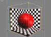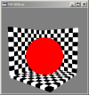
generate vista maps:
I render 6x8 vista maps. Camera is using ortogonal projection, placed
outside the scene box and facing the center of scene box. 6x means
"take all cube face directions" (FRONT, BACK, LEFT, RIGHT, TOP,
BOTTOM). 8x means "perform depth peeling for level 0 up to level 7").
This is not needed because current scene has only 2 depth levels, but
it fits resolution of the pbuffer well. I use pixel shader which writes
trinagle id and fragment z. See picture:
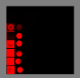
However, after this step I have 48 vista maps, each with dimension
128x128 pixels. Scene was rendered using VBOs and
render_to_depth_texture. Shadow mapping hardware was used to perform
second depth test (see Cass Everit's paper). Every pixel knows it's triangle id and z value when rasterized.
find hits:
First see example pictures how is pbuffer memory organized: (note that
buffer is not in full resolution and colors encode the data)
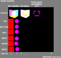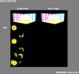
Hits are detected this way:
1. I have rendered scene from eye view. For every pixel I want to trace
a ray, I know ray origin and ray end. I copy this data into vertex
array 1 (VA1). (Note: If I don't want to trace line, I just fill some
coordinates like start=[-1, -1, -1] and end=[-1,-1,-1] and hope line
gets completelly clipped)
2. I draw VA1 as GL_LINES using rayinspector pixel shader. Ray origin
and ray end are given in world space. I render VA1 48 times (for every
vista map) with proper MODELVIEW matrix. The result of the line
rasterization are confirmed hit points (look them as a yellow points
the rest is black - discard). In pixel I store ray address in eye space
in [x,y], z = time of hit event, w = triangle id of hit.
3. I copy hit points into VA2.
4. I draw VA2 as GL_POINTS
using hitinspector pixel shader. This reports hits to their pixels in
eye view. DEPTH_TEST must be enabled with GL_LESS to sort hits in pixel
according to time.
rayinspector:
RayInspector is a pixel shader used for rasterization fragments of the
line. One line represents one ray. I render one ray 48 times (for each
vista map). Line is rasterized in world space from ray's origin to the
ray's end. In every fragment I have a chance to check the ray against
trinagle whose ID is stored in the current vista map. Test ray vs.
triangle is done analytically (see related links for the paper or see
Purcell's paper). I need to reduce number of these tests because of two
reasons:
1. in every pixel of vista map space I can remember only one hit, so
flooding with same hit multiple times would be wasting this valuable
space
2. ray-triangle intersection code is a complex fragment program
I can test z value of incomming fragment of the line against z-value
stored in the vista map. If they are not close enough (within some
specified interval) I should discard the fragment. This should help
prevent flooding vista map space with redundant hits but on the other
hand it can forget some hits. How big is this error ? Can I manage
ray-triangle intersection deferred computing ? I hope this z-interval
test can be accelerated in shadow mapping hardware (in texture units)
and not computed in fragment program itself.
hitinspector:
HitInspector is a pixel shader used for rasterization fragment(s) of
the points. One point represents one hit produced by RayInspector.
Point has position [x,y,z] where [x,y] are screen coordinates of pixel
from eye view (this pixel was sending the ray = line was executed by
this pixel). [z] is time when hit was detected. Using depth test with
GL_LESS, we force rasterizer to return us only first hit of every
pixel. [w] is a texture coordinate storing tringle ID. That mean's ID
of triangle which was hit by the ray. With this information next shader
pass can compute ray shading. If there was no hit between ray from
[x,y] and triangles of the scene. No "hit pixel" is rasterized in the
position [x,y].
Method's cons:
1. scene must have a limited depth complexity (no problem for me)
2. aliasing problems (oh, we know it from shadow mapping)
3. pathological cases (ray perpendicular to triangle both perpendicular to vista map view)
4.
lost hits due to limit "one hit per vista map texel" (limit amount of
reflective materials in the scene, increase resolution, limit somehow
hit flooding, etc.)
...
Method's pros:
1. works for dynamic scenes (cool !!!)
2. better GPU utilization than Purcell's ?
Current implementation(=problems)
I'm using OpenGL 1.5 + GLEW library, Cg 1.2 + Cg runtime, vp30 and fp30
profiles, RenderTexture class. Forceware 61.12 drivers. GPU GeForce FX
5950U
allocated pbuffer 1024x1024 with parameters "rgba=32f doublebuffer depth texRECT depthTexRECT"
main loop
render scene from eye view
switch to pbuffer
render 6x8 vista maps in front
// area [0..8x128, 0..6x128]
render from eye view into front (write ray origins)
// area [0..255, 6x128...6x128+255]
render from eyeview into front (write ray ends)
// area[256..256+255, 6x128...6x128+255]
render vertical line grid (1px spacer) into back
// area [0..510, 6x128...6x128+255]
// (written every even line) output origins
render vertical line grid (1px spacer) into back
// area [1..511, 6x128...6x128+255]
// (written every odd line) output ends
render vertical line grid (1px spacer) into back
// area [512+0..512+510, 6x128...6x128+255]
// (written every even line) output ends
render vertical line grid (1px spacer) into back
// area [512+1..512+511, 6x128...6x128+255]
// (written every odd line) output origins
glReadPixels([0..511, 6x128...6x128+255], PBO1) from back
glReadPixels([512+0..512+511, 6x128...6x128+255], PBO1+offset) from back
// now i have line origins and ends in vertex buffer,
// the same information is stored in texture coordinates but swapped,
// so every vertex knows the origin and the end
// of the line vertex it belongs to (so every pixel knows too)
rebind PBO1 as a VBO1 and render lines using rayinspector into back
// batch of 256x256 lines is rendered 48 times for every vista map, ufff
glReadPixels([0..8x128, 0...6x128], PBO2) from back
// now i have hits in PBO2 [x,y] is address of original pixel in eye
rebind PBO2 as a VBO2 and render points using hitinspector into front
// area [512..512+255, 6x128...6x128+255]
...
switch back to main context
glSwapBuffers();
end loop
Notes:
1. rendering vista maps: using render_to_depth, binding depth buffer
and GL_TEXTURE_COMPARE_MODE_ARB, GL_COMPARE_R_TO_TEXTURE_ARB for second
depth test. Using static VBO for whole scene geometry (one glDrawArrays
call).
2. Because of lack of MRT's on nvidia I render my scene two times from
eye view. First render outputs ray origins, second outputs ray ends.
Then I need to do 4 renders of line grid to interleave data for reading
by PBO and binding as VBO for GL_LINES. I don't know better "readback"
schema yet. Grid consist of 256 vertical lines long 256 pixels (spaced
with 1px gap). Grid is stored in static VBO in the GPU. Interleaver
uses just simple read from front buffer and does copy into back buffer.
3. PBO -> VBO is done standard way. In case of lines I need to call
glReadPixels two times (i need to feed texture coordinates with other
line point for vertex). Line needs to know ray origin and direction for
analytic ray-triangle intersection (in every fragment).
4. lines are rasterized by calling 48xglDrawArrays(GL_LINES,...)
5. points are rasterized by calling glDrawArrays(GL_POINTS,...)
all vertex and fragment programs are compiled.
ufff, I think that is enough for now.
| | | 10.05.2004 | Raytracer (primary ray, secondary reflection and refraction rays + shadow rays) | | | | Today,
I have extended and bugfixed previous version of raycaster. Main
concept stayed the same. I fixed some singular cases with shadow rays
and debugged reflection code. Here is simple example of 2-level
raytracer in BrookGPU.
Note: Unfortunatelly, I have reached HW limitations of nv30gl profile
of BrookGPU (max textures per kernel). Now I'm running only CPU path.
Scene: 'Checker board with sphere', 1440 triangles, 2 lights, voxels 10x10x10, 4000 passes, resolution 512x512
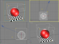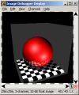
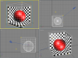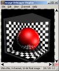
Next
focus in 1): continue in implementation of full Purcell's raytracer
using BrookGPU, fix remaining bugs, test refraction, test more levels | | | 06.05.2004 | Raycaster + primary shadow rays | | | | Today,
I have done working prototype of more advanced raycaster. Program is
able to trace primary shadow rays. Multiple point ligths are supported.
Current version is also prepared to be extended for secondary reflected
and refracted rays.
I simplified previous raycaster, I merged intersector_init and
intersector_step kernels into one kernel.
I introduced new kernel called dispatcher. This kernel is responsible
for preparing new ray when previous ray is finished.
Current version has following main loop schema:
samplephases = NUMRAYS per pixel
shadowphases = lights+1
[ samplephases*shadowphases
traverser_init
[
[ 5x
traverser
]
[ 5x
intersector
]
]
shader // do blending
dispatcher
]
Scene: 'Triangle', 1 triangle, 2 lights, voxels 10x10x10, 450 passes, resolution 256x256
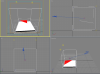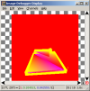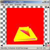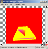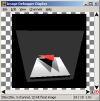
Scene: 'Torus', 492 triangles, 2 lights, voxels 10x10x10, 1500 passes, resolution 256x256
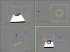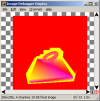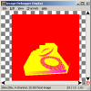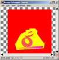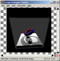
Scene: 'Torus', 492 triangles, 2 lights, voxels 10x10x10, 1500 passes, resolution 1024x1024
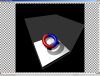
Next focus in 1): continue in implementation of full Purcell's
raytracer using BrookGPU (reflected and refracted rays), fix some
remaining issues with shadows | | | 03.05.2004 | Raycaster implementation using BrookGPU | | | | Two
weeks ago I started to work on this project hard again (last decent
work was done in January and then I had to stop mainly because of
driver bugs).
I have quite good news here. I have working raycaster written using BrookGPU.
At the moment only CPU path works correctly, I have some issues with
nv30gl path. This is not so big problem, because I'm using Brook for
fast prototyping of algortihms and for debugging purposes.
I have Purcell's raycaster running for simple scenes. This is NOT realtime at the moment.
Voxel grid is 10x10x10 (1000 voxels).
Currently, I have 5 kernels: traverser_init, traverser_step, intersector_init, intersector_step, shader.
Oracle is very simple: algorithm loops 5x traverser step + 5x intersector step. Last step is shading pass.
Pixels can be shaded with three types of shading algorithms: SIMPLE, FLAT or SMOOTH.
Scene: 'Triangle', 1 triangle, 1 light, voxels 10x10x10, 250 passes, resolution 256x256
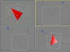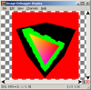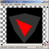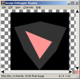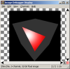
Scene: 'Box', 12 triangles, 1 light, voxels 10x10x10, 250 passes, resolution 256x256
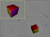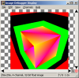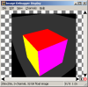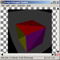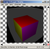
Scene: 'Sphere', 960 triangles, 1 light, voxels 10x10x10, 400 passes, resolution 256x256
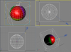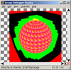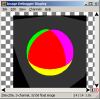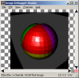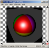
Next focus in 1): implement full Purcell's raytracer using BrookGPU (shadow rays, reflected and refracted rays) | | | 29.03.2004 | Thesis 'Ray Tracing on a Stream Processor' by Tim Purcell | | | | I was waiting for this wonderfull thesis, because there is a key information for my future research.
When I overcome implementation problems, I want to focus on:
1) fast implementation using BrookGPU
2) fine Purcell's raytracer implementation on FX5950 using Cg1.2+OpenGL1.5 and fp30 profile (some work already done)
3) my raytracer using bounding volumes as accelerarion structure (and more)
| | | 02.02.2004 | WSCG'2004 | | | | I'm leaving for a week to
The 12-th International Conference in Central Europe on
Computer Graphics, Visualization and Computer Vision'2004
I hope I will meet there some GPU related topics. | | | 19.01.2004 | First implementation problems :-/ | | | | I
started to implement Purcell's raytracer in the GPU as a reference
implementation for my future research. I have choosen
Cg1.1+OpenGL1.5+pf30 platform. I have written a simple framework for my
project (wrappers dealing with fragment programs using Cg runtime,
pbuffer class, pbuffer state machine, quads renderer etc.). I started
to heavily use cgc.exe and Cg runtime for compiling, binding and
running my program kernels. At the moment i'm not very familiar with
fp30 assembler (NV_fragment_program), mainly because it has so poor
documentation in the form of extension. There was a lot of try-it-again
or do-it-another-way situations. I learned many new issues mainly about
pbuffers, render_to_texture and NV_fragment_program extensions. Some of
my implementaion problems are described here.
At this point I have working Ray Generator kernel and Grid Traverser kernel as described in Purcell's paper.
For traversing grid structure I used method described here.
I have also successfully tested ray-triangle intersection routine (described here).
I use imdebug for image debugging - a great tool !.
Implementation details:
I'm using double-buffered floating point buffers. I use
render_to_texture with ping-pong scheme in buffer. Simple state machine
tracks next output rectangle and binds last output rectangle as input
texture for next pass. I avoid switching pbuffers, all work is done
within single pbuffer and switching surfaces using glDrawBuffer
function. At the moment I have ran into troubles with Cg runtime. Maybe
speed expectations were higher, but this is my first try to implement
complex GPU algorithm.
I have studied new papers. The interesting ones I added into workspace (check papers/important folder).
I browsed nearly whole GPGPU forums looking for similar implementation solutions.
| | | 08.01.2004 | The "Day D" | | | |
Till now, it was just a theory. From now it starts to be a real hardcoding :).
Yes, yes, I bought GigaByte MAYA GV-N595U256V 256MB for my Inferno research.
From last time I did some work on reading papers and specifications. I
have gained quite a deep knowlege about nVidia OpenGL extensions. I
also browsed tons of web pages ;). I have also some positive reactions
from the visitors of this site and GPGPU pages.
| | | 05.12.2003 | Site improvements and studying | | | | I did quite more work on Inferno last month in comparsion with last year ;-). Here is a brief report:
I have been snuffing on internet forums and around looking for some GPU related projects and info.
I found great site www.gpgpu.org (thanks to jezeq).
Papers, I have studied:
OpenGL 2.0 specifications (overview first reading)
Photon Mapping on Programmable Graphics Hardware - awesome paper
Implementing Ray Casting in Tetrahedral Meshes with Programmable Graphics Hardware
The Inferno site changes:
"Workspace" section opened - workspace is dedicated to files that i'm working with and are related to inferno project.
"Pros & Cons" section opened - text dedicated to comparsion of raytracing pros and cons on GPUs.
Site statistics (not public).
Future tasks:
"Research Focus" section on the site. At this point site wil be announced on gpgpu.org
pbuffer OpenGL extension
DirectX 9.0 features
|
|
|
|
|


{kind=link}
{kind=link}
{kind=link}
{kind=link}
{kind=link}
{kind=link}
{kind=link}
{kind=link}
{kind=link}
{kind=link}
{kind=link}
{kind=link}
{kind=link}
{kind=link}
{kind=link}
{kind=link}
{kind=link}
{kind=link}
{kind=link}
{kind=link}
{kind=link}
{kind=link}
{kind=link}
{kind=link}
{kind=link}
{kind=link}
{kind=link}
{kind=link}
{kind=link}
{kind=link}
{kind=link}
{kind=link}
{kind=link}
{kind=link}
{kind=link}